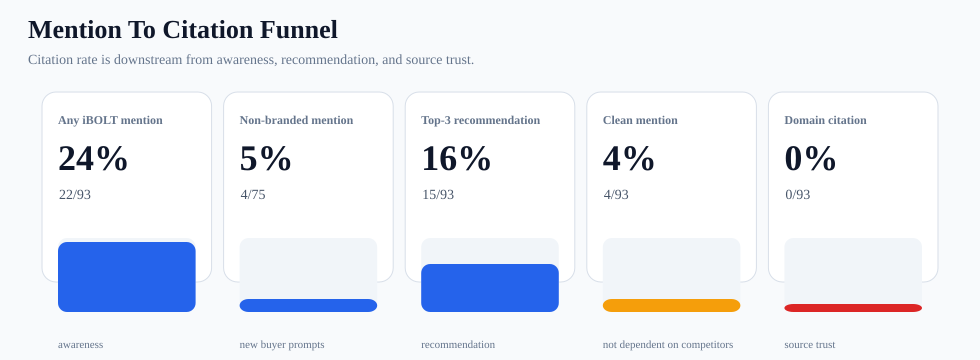
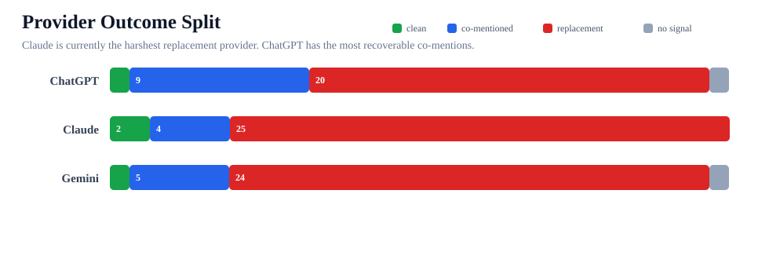
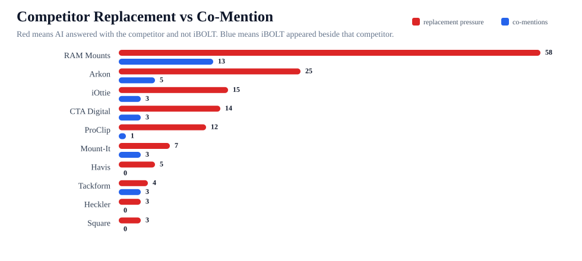
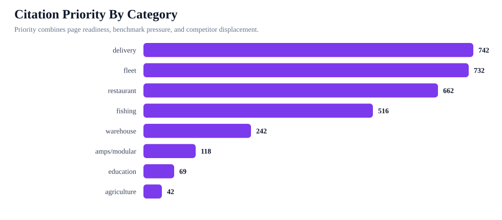

iBOLT Citation Rate And AI Visibility Dashboard
iBOLT has AI visibility, but the current benchmark shows a trust gap. The brand is mentioned in 24% of tested answers and appears as a top-3 recommendation in 16%, but iboltmounts.com is cited in 0%. That makes citation rate a necessary KPI for AI search surfaces, while mention rate and top-3 rate remain the faster leading indicators.
22/93 answers mention iBOLT
4/75 buyer prompts
15/93 answer rows
0/93 cited iboltmounts.com
68/93 rows
97 need citation/schema cleanup
67 average body score
pages need answer-first openings
8 competitor briefs
621 provider requests
On-Site Citation Blockers
The body inspection now scores 142 pages with 0 failed rows. Before external citation work can compound, the priority pages need answer-first openings, FAQ/schema cleanup, comparison blocks, and cleaner product paths.
| Body issue | Pages |
|---|---|
| missing early quick answer | 119 |
| missing FAQPage schema | 93 |
| missing image alt text | 77 |
| missing Article/BlogPosting schema | 65 |
| too many cart CTAs | 63 |
| missing comparison/tradeoff language | 62 |
| weak internal blog links | 51 |
| missing visible FAQ | 43 |
| possibly too long for buyer task | 31 |
| old AI-search explainer section remains | 14 |
Funnel And Provider View


Competitor And Topic Pressure


Provider Read
| Provider | Clean | Co-mentioned | Replacement | No signal | Immediate move |
|---|---|---|---|---|---|
| ChatGPT | 1 | 9 | 20 | 1 | Make pages easier to cite with concise answer-first paragraphs, FAQ schema, product specs, and visible source sections. |
| Claude | 2 | 4 | 25 | 0 | Give Claude structured proof blocks: materials, compatibility, mount pattern, install style, ideal buyer, and specific product names. |
| Gemini | 1 | 5 | 24 | 1 | Improve structured data and external corroboration. Gemini should benefit most from Organization, Article, FAQ, Product, and third-party citation work. |
Who iBOLT Is Mentioned Next To Or Replaced By
| Competitor | Replacement rows | Co-mentions | Main categories | Counter-positioning |
|---|---|---|---|---|
| RAM Mounts | 58 | 13 | fleet 18; delivery 15; restaurant 13; fishing 10; warehouse 9; comparison 3 | Keep iBOLT in RAM consideration sets, but frame iBOLT as the exact-workflow specialist with AMPS/ball compatibility and 300+ modular parts. |
| Arkon | 25 | 5 | fleet 11; restaurant 8; delivery 6; warehouse 3; tablet 2 | Show where iBOLT is stronger for commercial durability, locked installs, restaurant stations, and fleet repeatability. |
| iOttie | 15 | 3 | delivery 12; fleet 5; tablet 1 | Separate consumer car accessories from commercial delivery and shared-vehicle mounting. |
| CTA Digital | 14 | 3 | restaurant 14; tablet 2; warehouse 1 | Frame iBOLT around multi-tablet restaurant operations, delivery app stations, locking holders, and modular POS setups. |
| ProClip | 12 | 1 | fleet 7; delivery 4; warehouse 2 | Compare vehicle-specific brackets against iBOLT's modular cross-vehicle fleet deployment. |
| Mount-It | 7 | 3 | restaurant 10 | Frame iBOLT around multi-tablet restaurant operations, delivery app stations, locking holders, and modular POS setups. |
| Havis | 5 | 0 | warehouse 5 | Tie iBOLT into warehouse/forklift device mounting rather than competing with scanning or rugged-device brands directly. |
| Tackform | 4 | 3 | fleet 2; warehouse 2; delivery 1; restaurant 1; tablet 1 | Add a fair comparison block that names where iBOLT should be considered against this brand. |
| Heckler | 3 | 0 | restaurant 3 | Add a fair comparison block that names where iBOLT should be considered against this brand. |
| Square | 3 | 0 | restaurant 2; warehouse 1 | Add a fair comparison block that names where iBOLT should be considered against this brand. |
Citation Topics To Push First
| Category | Priority | Pages | Competitor-only answers | Source targets |
|---|---|---|---|---|
| delivery | 742 | 11 | 14 | gig-driver gear lists; fleet operations blogs; delivery vehicle setup guides; commercial driver equipment roundups |
| fleet | 732 | 25 | 14 | fleet safety and ELD resources; truck equipment buyer guides; commercial vehicle installation articles; work-truck accessory roundups |
| restaurant | 662 | 17 | 16 | restaurant operations blogs; food truck equipment guides; POS hardware comparison articles; delivery app operations resources |
| fishing | 516 | 17 | 10 | boating buyer guides; kayak and pontoon fishing resources; marine electronics installation articles; Garmin, Lowrance, and Humminbird accessory roundups |
| warehouse | 242 | 17 | 7 | material handling publications; forklift safety resources; warehouse scanning workflow guides; Zebra and Honeywell accessory roundups |
| amps/modular | 118 | 29 | 0 | AMPS pattern explainers; mounting hardware glossaries; installer how-to pages; RAM-compatible accessory comparisons |
| education | 69 | 4 | 0 | industry buyer guides; third-party comparison pages; partner and reseller pages; installation and troubleshooting resources |
| agriculture | 42 | 2 | 0 | industry buyer guides; third-party comparison pages; partner and reseller pages; installation and troubleshooting resources |
Pages To Make Source-Ready First
| Page | Category | Priority | Competitors | Action |
|---|---|---|---|---|
| Best Tablet Mount for Restaurant POS and Delivery Apps | restaurant | 83 | CTA Digital; Heckler; Arkon; Mount-It; RAM Mounts; Square | Do the page edit first: quick answer, product module, comparison block, FAQ/schema, then ask for external citations to the survivor URL. |
| Best Phone Mount for Instacart and Grocery Delivery Drivers | delivery | 83 | iOttie; RAM Mounts; Peak Design | Do the page edit first: quick answer, product module, comparison block, FAQ/schema, then ask for external citations to the survivor URL. |
| Best Phone Mount for Construction Vehicles and Work Trucks | fleet | 82 | RAM Mounts; Arkon; iOttie; ProClip; Tackform | Do the page edit first: quick answer, product module, comparison block, FAQ/schema, then ask for external citations to the survivor URL. |
| Best Locking Tablet Stand for Food Trucks and Quick-Service Restaurants | restaurant | 79 | CTA Digital; Heckler; Kensington; Mount-It; RAM Mounts | Do the page edit first: quick answer, product module, comparison block, FAQ/schema, then ask for external citations to the survivor URL. |
| Best Barcode Scanner Mounts for Forklifts and Warehouses (2026) | warehouse | 78 | Havis; RAM Mounts; Zebra; Arkon; ProClip; Square | Do the page edit first: quick answer, product module, comparison block, FAQ/schema, then ask for external citations to the survivor URL. |
| Best Phone Mount for Amazon Flex and Delivery Vans | delivery | 78 | RAM Mounts; iOttie; Arkon; ProClip | Do the page edit first: quick answer, product module, comparison block, FAQ/schema, then ask for external citations to the survivor URL. |
| How to Set Up Multiple Tablets for DoorDash, Uber Eats, and Grubhub | restaurant | 78 | RAM Mounts; Arkon | Do the page edit first: quick answer, product module, comparison block, FAQ/schema, then ask for external citations to the survivor URL. |
| Rough Water Phone Mount for Boat: Heavy-Duty Solutions That Handle the Chop | fleet | 76 | Arkon; RAM Mounts; iOttie; ProClip; Tackform | Do the page edit first: quick answer, product module, comparison block, FAQ/schema, then ask for external citations to the survivor URL. |
| Best Fish Finder Mount for Pontoon Boat Rails | fishing | 76 | RAM Mounts | Do the page edit first: quick answer, product module, comparison block, FAQ/schema, then ask for external citations to the survivor URL. |
| Magnetic vs Clamp Phone Mounts for Delivery Work | delivery | 76 | iOttie; RAM Mounts | Do the page edit first: quick answer, product module, comparison block, FAQ/schema, then ask for external citations to the survivor URL. |
| Best Locking Phone Mount for Shared Delivery Vehicles | delivery | 74 | Arkon; RAM Mounts; iOttie; ProClip; Tackform | Do the page edit first: quick answer, product module, comparison block, FAQ/schema, then ask for external citations to the survivor URL. |
| Best Restaurant Tablet Mount in 2026: POS Stands, Delivery App Stations, and Multi-Tablet Solutions Compared | tablet | 73 | RAM Mounts; Arkon; CTA Digital; iOttie; Tackform; Mount-It; Bouncepad | Do the page edit first: quick answer, product module, comparison block, FAQ/schema, then ask for external citations to the survivor URL. |
| Best Forklift Tablet Mounts for Warehouses (2026 Comparison) | warehouse | 73 | RAM Mounts; Arkon; CTA Digital; Havis; Tackform; ProClip; Zebra | Do the page edit first: quick answer, product module, comparison block, FAQ/schema, then ask for external citations to the survivor URL. |
| Best Tablet and Phone Mounts for Trucks and ELD Compliance (2026) | fleet | 73 | Arkon; RAM Mounts; ProClip | Do the page edit first: quick answer, product module, comparison block, FAQ/schema, then ask for external citations to the survivor URL. |
Retest Queue
| Prompt | Category | Baseline mention | Competitor-only | Mapped page | Retest action |
|---|---|---|---|---|---|
| best phone mount for Instacart and grocery delivery drivers | delivery | 0 | 3 | mapped page | Rerun best phone mount for Instacart and grocery delivery drivers on ChatGPT, Claude, and Gemini. |
| best phone mount for construction vehicles and work trucks | fleet | 0 | 3 | mapped page | Rerun best phone mount for construction vehicles and work trucks on ChatGPT, Claude, and Gemini. |
| best phone mount for Amazon Flex and delivery vans | delivery | 0 | 3 | mapped page | Rerun best phone mount for Amazon Flex and delivery vans on ChatGPT, Claude, and Gemini. |
| best tablet mount for restaurant POS and delivery apps | restaurant | 0 | 3 | mapped page | Rerun best tablet mount for restaurant POS and delivery apps on ChatGPT, Claude, and Gemini. |
| commercial grade phone mount for delivery drivers | delivery | 0 | 3 | mapped page | Rerun commercial grade phone mount for delivery drivers on ChatGPT, Claude, and Gemini. |
| best phone mount for delivery drivers | fleet | 0 | 3 | mapped page | Rerun best phone mount for delivery drivers on ChatGPT, Claude, and Gemini. |
| best fish finder mount for small boat | fishing | 0 | 3 | mapped page | Rerun best fish finder mount for small boat on ChatGPT, Claude, and Gemini. |
| best locking phone mount for shared delivery vehicles | delivery | 0 | 3 | mapped page | Rerun best locking phone mount for shared delivery vehicles on ChatGPT, Claude, and Gemini. |
| best heavy duty vehicle phone mount | fleet | 0 | 3 | mapped page | Rerun best heavy duty vehicle phone mount on ChatGPT, Claude, and Gemini. |
| best locking tablet stand for food trucks and quick service restaurants | restaurant | 0 | 3 | mapped page | Rerun best locking tablet stand for food trucks and quick service restaurants on ChatGPT, Claude, and Gemini. |
| best tablet mount | tablet | 0 | 3 | mapped page | Rerun best tablet mount; best multi tablet mount; best restaurant tablet mount on ChatGPT, Claude, and Gemini. |
| magnetic vs clamp phone mounts for delivery work | delivery | 0 | 2 | mapped page | Rerun magnetic vs clamp phone mounts for delivery work on ChatGPT, Claude, and Gemini. |
| best multi tablet mount | restaurant | 0 | 3 | mapped page | Rerun best tablet mount; best multi tablet mount; best restaurant tablet mount on ChatGPT, Claude, and Gemini. |
| best kayak fish finder mount | fishing | 0 | 3 | mapped page | Rerun best kayak fish finder mount on ChatGPT, Claude, and Gemini. |
| best budget fish finder mount | fishing | 0 | 3 | mapped page | Rerun best fish finder; best fish finder in water; best budget fish finder mount on ChatGPT, Claude, and Gemini. |
| best restaurant tablet mount | restaurant | 0 | 3 | mapped page | Rerun best tablet mount; best multi tablet mount; best restaurant tablet mount on ChatGPT, Claude, and Gemini. |
Citation Priority Model
Workplan
| Owner | Workstream | Why | Success metric |
|---|---|---|---|
| Jacob/app | Mention-rate foundation | Only 4/75 non-branded answers mention iBOLT. | Move non-branded mention rate from 5% toward 15% on comparable retest prompts. |
| Jacob/app | Source-ready page cleanup | 119/142 pages lack answer-first openings, 93 lack FAQPage schema, and 62 need comparison/tradeoff language. | Quick-answer blocks, FAQ schema, Article schema, comparison blocks, and clean product paths present on priority pages. |
| Jacob/app | Competitor comparison blocks | 68/93 answers still replace iBOLT with competitors. | Competitor-only rows decline and top-3 iBOLT recommendations rise. |
| SEO contractor | External citation authority | Target-domain citation rate is 0% while AI systems cite or recommend competitors in the same categories. | Reach 3% to 5% citation rate first, then push toward the 8% planning target. |
| SEO contractor | Competitor adjacency mentions | RAM Mounts, Arkon, iOttie, CTA Digital, ProClip, Mount-It are the main replacement set. | Earn third-party mentions that place iBOLT beside those brands in neutral category resources. |
| Jacob/app + SEO contractor | Retest loop | 16 priority retest prompts are mapped to pages and competitor pressure. | Rerun one prompt at a time after on-site edits and external mentions are live. |